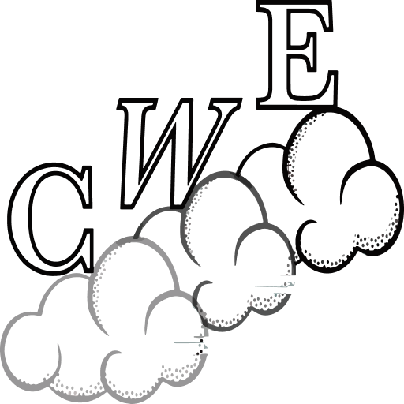
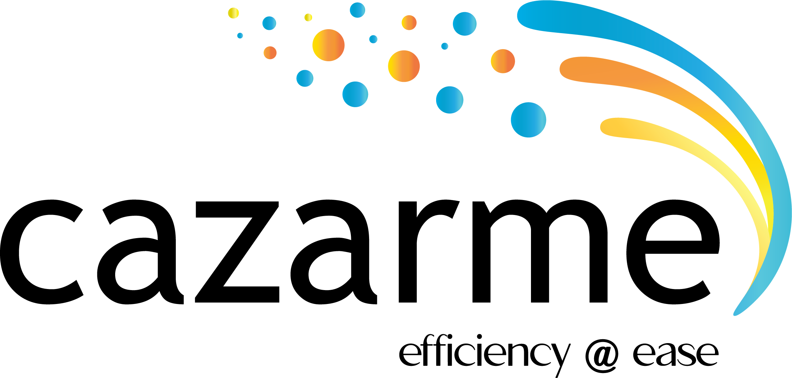
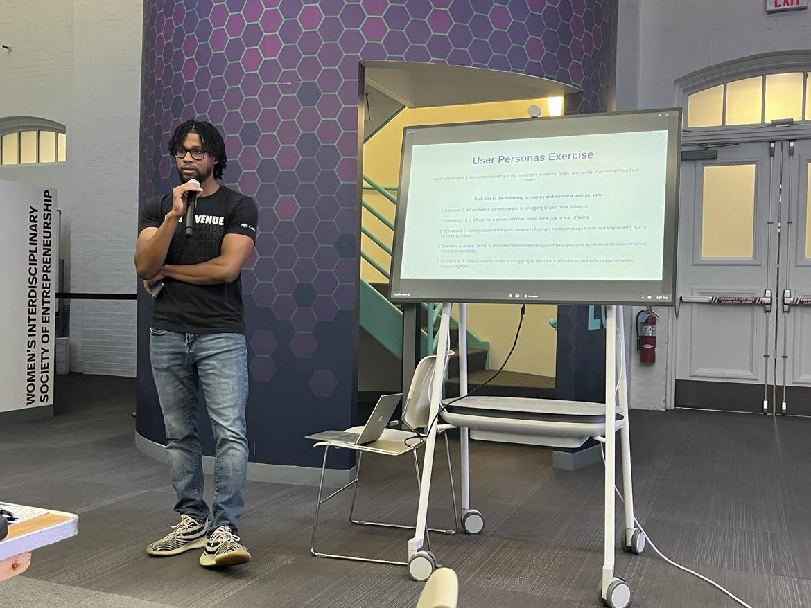

Entrepreneurship in Action
Materials for courses you taught. Replace this text with your description.
Ventures
Cloud Walk Enterprises

Cloud Walk Enterprises is a software development and consulting company I founded in 2022. We specialize in creating custom software solutions for small and medium-sized businesses, focusing on:
- Web and Mobile Development
- Software Architecture
- Startup Advising
Our team has delivered high-quality solutions across industries such as healthcare, finance, and education, empowering clients with innovative technology.
Cazarme INC

I co-founded and led Cazarme as CEO during the pandemic. Cazarme was a B2B SaaS startup that leveraged Natural Language Processing (NLP) to analyze user research interviews.
- Accelerator Program: Alchemist Accelerator Cohort XIXX
- Backed By: Lightspeed Venture Partners and Accel
- Impact: Enabled businesses to deeply understand their customers and accelerate the user research process.
Stelth Startup
I am currently building a new solution leveraging AI and machine learning. Stay tuned for updates!
Teaching
Sustainable Entrepreneurship Hackathon – Northeastern University (Fall 2024)

I had the privilege of designing and leading a workshop on problem identification and customer discovery at Northeastern University’s Sustainable Innovation Startup Hackathon.
- Audience: 30+ undergraduate and graduate students
- Key Learnings: Taught methods for identifying problems and validating assumptions through customer discovery interviews.
Read more about the workshop in my LinkedIn article.
Northeastern University Sustainable Entrepreneurship Hackathon (Fall 2024)
insert photo here
I had the privilege of designing and leading a workshop on problem identification and customer discovery at Northeastern’s Sustainable Innovation Startup Hackathon! I taught a room of over 30 undergraduate and graduate students how to identify problems and validate their assumptions through customer discovery interviews. My full article diving deeper into the workshop can be found here.
MIT Founders Journey (Fall 2023)
I had the honor of speaking at MIT’s Founders Journey class, sharing insights from my entrepreneurial journey with undergraduate students.
- Impact: Engaged students with actionable advice and real-world examples.
- Focus: Lessons learned from building startups and leading innovation.